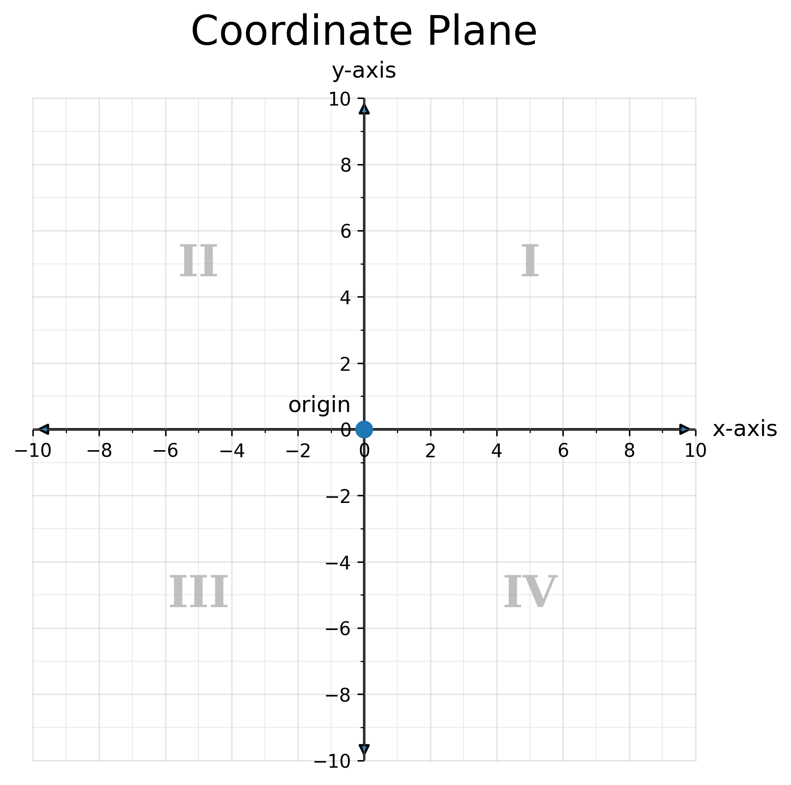
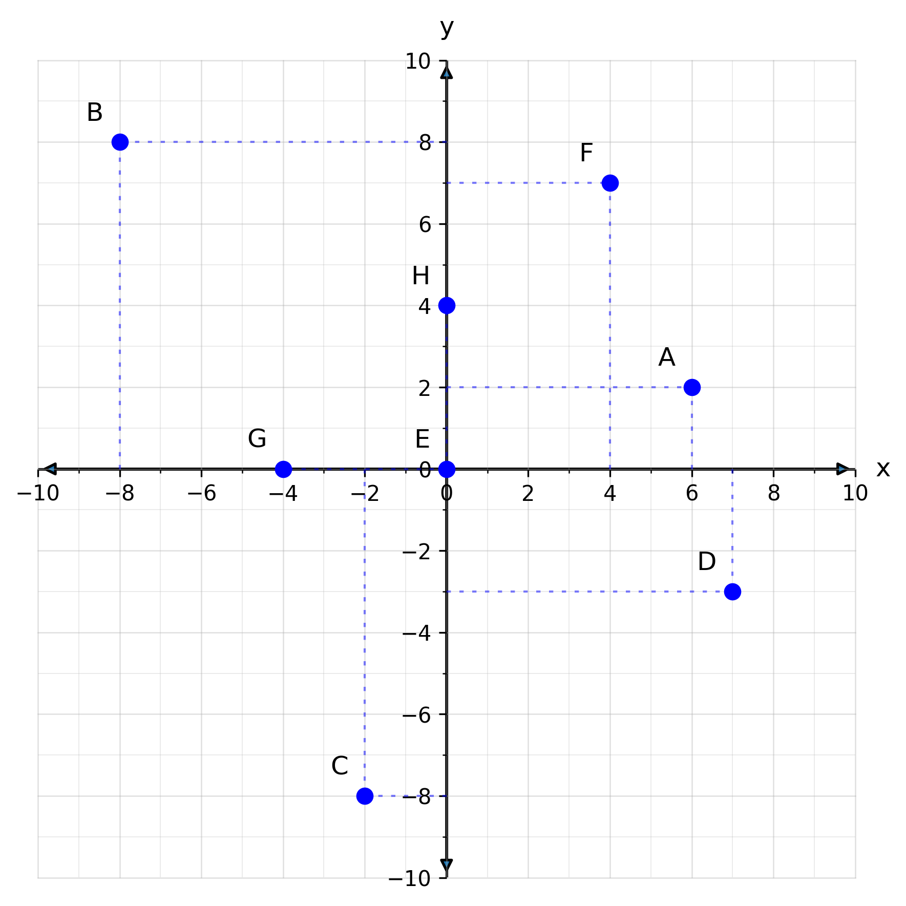
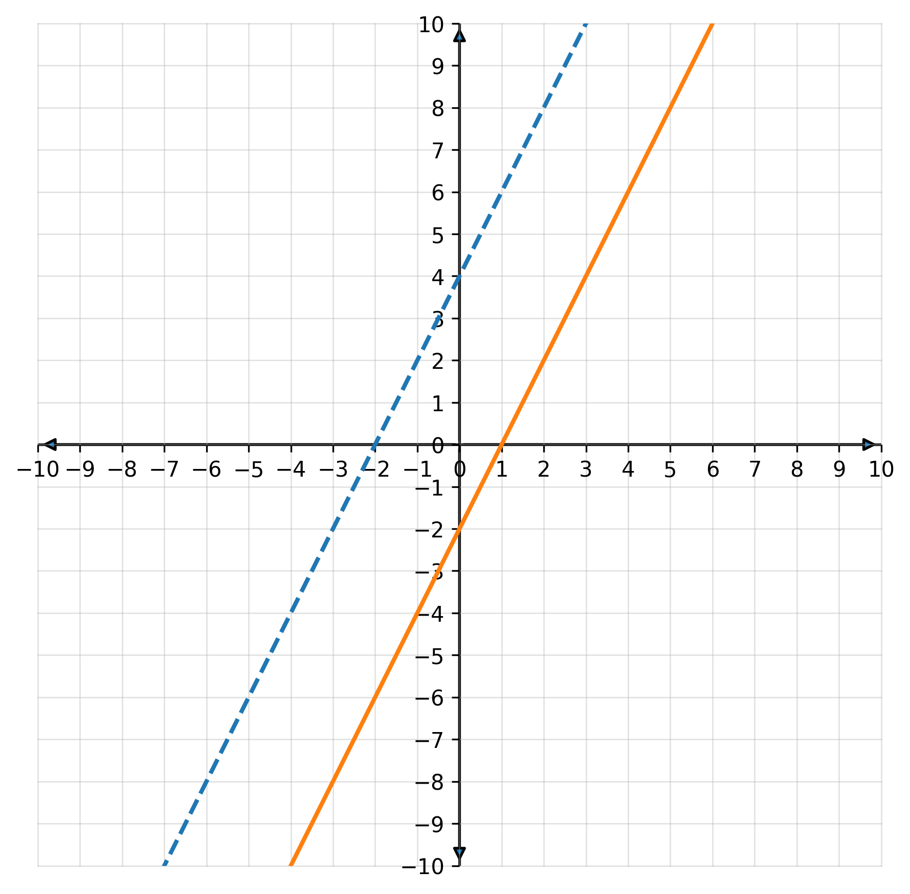

Use an equation or function rule to find y when I know x
Make a table of values and graph the related points
Recognize that these points form a straight line
Warm-Up
1. Complete the table for f(x) = 2x + 1.
x
f(x)
2
{{a}}5{{/a}}
4
{{a}}9{{/a}}
6
{{a}}13{{/a}}
2. Plot the solution to 2x + 1 = 7 on a number line.{{a}} x = 3, one dot at 3{{/a}}
{{nl}}
3. A number line shows one number. How could you show two numbers at once?
{{a}}
Cross two number lines. That is the coordinate plane.
{{/a}}
4.1.1The Coordinate Plane
The coordinate plane is two number lines that cross.
The x-axis runs left and right.
The y-axis runs up and down.
They meet at the origin, (0, 0).
Every point has an ordered pair (x, y).
The axes make four quadrants, I to IV. Start in the top right and go counterclockwise.
To plot a point, start at the origin.
Move left or right for x.
Then move up or down for y.
Mark the spot.

the coordinate plane
EX 1. Plot the points
(4, 2), (−6, 4), (−4, −8), and (8, −4).
{{grid-lg}}{{a}}
(4, 2): right 4, up 2 (−6, 4): left 6, up 4 (−4, −8): left 4, down 8 (8, −4): right 8, down 4
{{/a}}
EX 2. Match the points to their labels.your turn

1. (−4, 0) {{a}}G{{/a}}
2. (−8, 8) {{a}}B{{/a}}
3. (−2, −8) {{a}}C{{/a}}
4. (0, 0) {{a}}E{{/a}}
5. (0, 4) {{a}}H{{/a}}
6. (6, 2) {{a}}A{{/a}}
7. (7, −3) {{a}}D{{/a}}
8. (4, 7) {{a}}F{{/a}}
4.1.2Function Rules and Tables of Values
Each input/output pair is a point you can plot.
Connect the points to see what the function looks like.
EX 3. Graph f(x) = 2x + 1
using x = 1, 2, 3, 4.
x
f(x)
1
{{a}}3{{/a}}
2
{{a}}5{{/a}}
3
{{a}}7{{/a}}
4
{{a}}9{{/a}}
{{a}}
The points make a straight line. f(x) = 2x + 1 is a linear function.
{{/a}}
{{grid}}
That's the answer!
An equation with one variable has one answer. On a number line, it is one point.
An equation with two variables has many answers. All the (x, y) pairs
that make the equation true line up to form a straight line.
That is why we graph the equation. The line shows all the solutions.
Remember
f(x) means the same thing as y. It is a different name for the output of a function.
So f(x) = 2x + 1 could also be written as y = 2x + 1.
EX 4. Graph h(x) =
−{{f 2/3}}x − 3 for x = −3, 0, 3.
x
h(x)
−3
{{a}}−1{{/a}}
0
{{a}}−3{{/a}}
3
{{a}}−5{{/a}}
{{grid}}
EX 5. Can you tell if h(x) is a function
just by looking at the graph?your turn
{{a}}
Yes. Each x value gives only one y value.
{{/a}}
EX 6. Graph g(x) = 3x
− 2 using x = −1, 1, 3.your turn
x
g(x)
−1
{{a}}−5{{/a}}
1
{{a}}1{{/a}}
3
{{a}}7{{/a}}
{{grid}}
Summary
leftlinearoriginquadrantrightx-axisyy-axis
1. The {{a}}x-axis{{/a}} runs left and right.
2. The two axes meet at the {{a}}origin{{/a}}, the point (0, 0).
3. To plot (−6, 4), start at (0, 0). Move 6 to the {{a}}left{{/a}}. Then move 4 up.
4. f(x) means the same thing as {{a}}y{{/a}}.
5. The points of f(x) = 2x + 1 form a straight line. It is a {{a}}linear{{/a}} function.
{{practice-head}}
Practice
1. Plot (1, 2), (2, 4), (3, 6). What do you notice about the pattern?
2. Add one more point that continues it.
3. Every point fits one of these rules. Which one? Check each point.
Pattern:
{{a}}
Every y is twice its x, and the points line up.
{{/a}}
New point: ( {{a}}4{{/a}} , {{a}}8{{/a}} )
Circle the rule: y = x + 1 y = 2xy = x + 2
{{a}}
y = 2x. y = x + 1 works for (1, 2) but not (2, 4).
{{/a}}
{{grid}}
4. Complete the table for y = x + 2 and graph.
x
y
−2
{{a}}0{{/a}}
0
{{a}}2{{/a}}
2
{{a}}4{{/a}}
{{grid}}
5. Graph f(x) = x − 4 for
x = 0, 2, 4, 6. Where does it cross the y-axis?
x
f(x)
0
{{a}}−4{{/a}}
2
{{a}}−2{{/a}}
4
{{a}}0{{/a}}
6
{{a}}2{{/a}}
Crosses the y-axis at {{a}}(0, −4){{/a}}
{{grid}}
6. Make a table for y = 2x using
x = −2, −1, 0, 1, 2. What happens to the outputs as x
increases?
x
−2
−1
0
1
2
y
{{a}}−4{{/a}}
{{a}}−2{{/a}}
{{a}}0{{/a}}
{{a}}2{{/a}}
{{a}}4{{/a}}
{{a}}
When x goes up by 1, y goes up by 2.
{{/a}}
7. Graph g(x) = 3x for x = 0, 1, 2, 3.
What do you notice about the spacing between the points?
{{a}}
Points (0, 0), (1, 3), (2, 6), (3, 9). When x goes up by 1, y goes up by 3. The spacing is even.
{{/a}}
{{grid}}
8. Graph f(x) = −2x for
x = −3 to 2. How does this line compare to y = 2x?
{{a}}
Points (−3, 6) … (2, −4). It is just as steep as y = 2x, but it goes down instead of up. It is a mirror image of y = 2x.
{{/a}}
{{grid}}
9. Graph y = x − 3 for x = 0 to 4.
Which point lies on the y-axis?
Point on the y-axis: {{a}}(0, −3){{/a}}
{{grid}}
10. Make a table for h(x) = {{f 1/2}}x + 1
using x = 0, 2, 4, 6. Plot and connect the points.
x
y
0
{{a}}1{{/a}}
2
{{a}}2{{/a}}
4
{{a}}3{{/a}}
6
{{a}}4{{/a}}
{{grid}}
11. Graph y = −x + 2 for
x = −2, 0, 2. What happens to the y-values as x
increases?
{{a}}
(−2,4), (0,2), (2,0). As x goes up by 1, y goes down by 1.
{{/a}}
{{grid}}
12. f(x) = 2x + 4 and
g(x) = 2x − 2 are graphed together.
How are the lines alike? How are they different?

Alike:
{{a}}
Both go up 2 for every 1 to the right.
{{/a}}
Different:
{{a}}
f crosses the y-axis at 4 and the x-axis at −2. g crosses at −2 and 1.
{{/a}}
13. Graph y = 3 and y = −2 on the same grid.
What kind of lines are they?
{{a}}
Both are horizontal lines. Every point has the same y.
{{/a}}
{{grid}}
Challenge
14. Without graphing, explain how you could tell whether
y = 4x + 2 and y = 4x − 5 ever cross.
Then check by graphing.
{{a}}
Both have slope 4 but different intercepts, so they are parallel and never cross. The graph confirms it.
{{/a}}
{{grid}}
15. A mystery function passes through (0, 2) and (2, 6). Write a possible rule
and plot one more point that fits it.